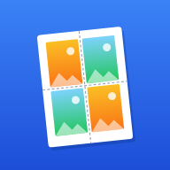

Print Sizing Support
Exact-size photo sheets and tiled posters for iPhone
Get in touch
Found a bug, have a question or want a feature? Open an issue on GitHub and I'll get back to you.
It helps to include your iPhone model, iOS version, printer model, the paper size you chose and a photo of the print if the size is wrong.
Common questions
My prints come out slightly smaller than the size I set
Print Sizing draws every page at actual size. If a print comes out small, something later in the chain is scaling it:
- In the iPhone print screen, check that the paper size matches the one you chose in the app.
- If you print from your printer maker's app using Share PDF, set its scaling to 100% or Actual size.
- Borderless printing enlarges the image slightly on many printers. Keep a page margin of 3–5 mm when the exact size matters.
How do I print several photos on one page?
Choose Photo sheet, add your photos, then under Size pick Photos per page (for example 6). The app finds the arrangement that shows them largest. To print at a fixed size instead, such as 2 × 3 in or a 35 × 45 mm passport photo, pick Exact size.
How do I crop or rotate one photo?
Tap the photo in the preview. You can move and zoom the crop, rotate it, or print extra copies. Cropping applies when Fill & crop is selected.
How do I put a poster together?
Each page is labelled (A1, A2, B1…) with a small map showing where it goes. Trim along the corner marks and join the pages in order. If you turned on Overlap, glue each page over the strip repeated on the next one.
What does the Photo paper switch do?
It tells the printer to use its photo quality settings. It's on by default for photo paper sizes such as 6 × 4 and 7 × 5.
Which printers work?
Any AirPrint printer works directly from the Print button. For other printers, tap Share PDF and open the PDF in your printer's app, or save it to Files.